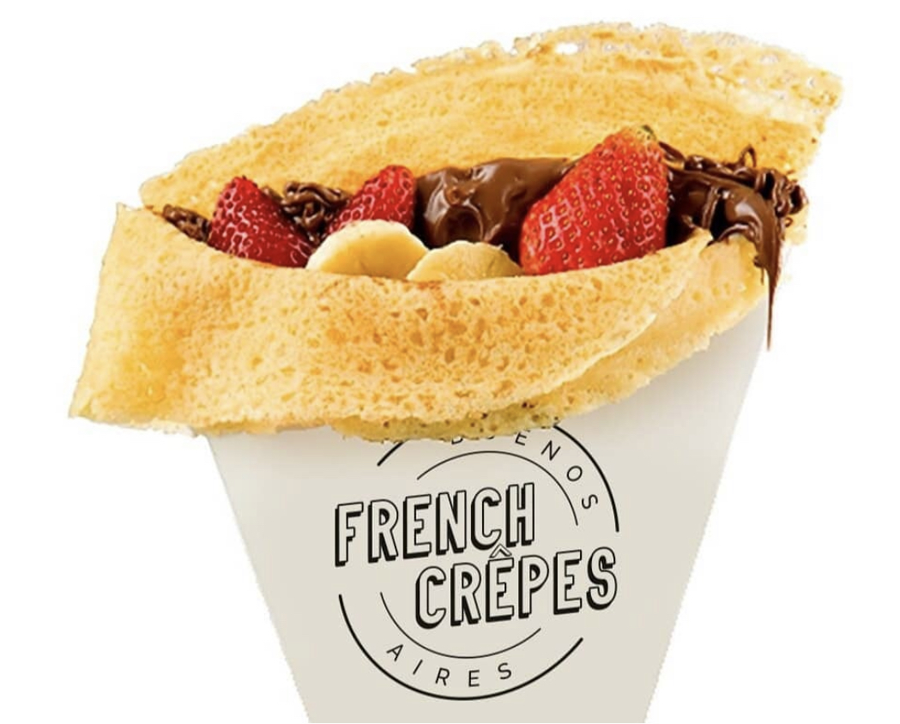

Bienvenidos a French Crepes
Aquí vas a poder encontrar los sabores más ricos que vas a probar en tu vida. Hacemos Crepas, Waffles y Taiyakis, tanto dulces como salados. Todo casero para que puedas disfrutar de la mejor calidad de producto.
Call to action Learn More

Somos un emprendimiento familiar, que nos encanta la cocina y mostrar nuestros inventos. Te invitamos a que pruebes nuestros productos en la zona de belgrano. No te vas a arrepentir. Va a ser como volver a probar esos sabores de tu infancia, ya que todo lo que hacemos en French es casero y lo mejor, podes verlo en vivo y en directo como te preparamos tu pedido en el momento!! Te esperamos!!